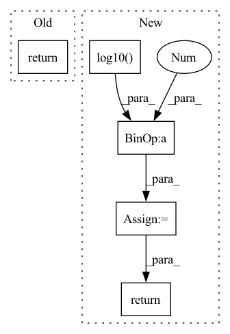

Pattern ID :39297
Before Change
fake_image = cv2.imread(input_image)
real_image = cv2.imread(target_image)
return mse(real_image, fake_image), psnr(real_image, fake_image)
// custom weights initialization called on netG and netDAfter Change
if mse < 1.0e-10:
return 100
psnr = 20 * math.log10( 1 / math.sqrt(mse))
return mse, psnr
// custom weights initialization called on netG and netDIn pattern: SUPERPATTERN
Frequency: 3
Non-data size: 5
Instances Fragment ID: 111523604
Project Name: lornatang/srgan-pytorch
Commit Name: 29d01cd98a157da7b20e0979d4cc4ea5f05e1989
Time: 2020-08-25
Author: liuchangyu1111@gmail.com
File Name: srgan_pytorch/utils.py
M Class Name: AnonimousClass
N Class Name: AnonimousClass
M Method Name: evaluate_performance(2)
N Method Name: evaluate_performance(2)
M Parent Class:
N Parent Class:
M File Name: srgan_pytorch/utils.py
N File Name: srgan_pytorch/utils.py
M Start Line: 33
M End Line: 36
N Start Line: 32
N End Line: 45
Before Change
def forward(self, pred, target):
pred, target = self.reshape_clamp(pred, target)
return -self.criterion(pred, target)
@classmethod
def to_display(cls, x):After Change
raise ValueError(f"{self.NAME} expects 5-D inputs!")
b, t, _, _, _ = pred.shape
mses = self.criterion(pred, target).mean(dim=(-1, -2, -3)) // [b, t]
psnr_losses = torch.log10( mses) * 10
return psnr_losses.mean(dim=1).mean(dim=0)
@classmethod
def to_display(cls, x): Fragment ID: 111523614
Project Name: ais-bonn/vp-suite
Commit Name: 53b39ddc910a9d2b6f8ccea38f192b169eb6cbee
Time: 2022-02-24
Author: boltres@ais.uni-bonn.de
File Name: vp_suite/measure/image_wise.py
M Class Name: PSNR
N Class Name: PSNR
M Method Name: forward(3)
N Method Name: forward(3)
M Parent Class: BaseMeasure
N Parent Class: BaseMeasure
M File Name: vp_suite/measure/image_wise.py
N File Name: vp_suite/measure/image_wise.py
M Start Line: 60
M End Line: 61
N Start Line: 61
N End Line: 66
Before Change
loudness -= ref_db
loudness = torch.clamp(loudness, min=-range_db)
// Average over frequency bins.
return torch.mean(loudness, dim=-1)
def compute_loudness(audio, sample_rate=16000, frame_rate=50, n_fft=2048, range_db=DB_RANGE, ref_db=0.0, a_weighting=None, center=True):
Perceptual loudness in dB, relative to white noise, amplitude=1.After Change
// to db
min_power = 10**-(range_db / 10.0)
power = torch.clamp(avg_power, min=min_power)
db = 10.0 * torch.log10( power)
db -= ref_db
db = torch.clamp(db, min=-range_db)
return db
def compute_loudness(audio, sample_rate=16000, frame_rate=50, n_fft=2048, range_db=DB_RANGE, ref_db=0.0, a_weighting=None, center=True):
Perceptual loudness in dB, relative to white noise, amplitude=1. Fragment ID: 111523610
Project Name: hyakuchiki/realtimeddsp
Commit Name: 9b3ade2af418623c28891f1bae47386a003f5c3d
Time: 2022-06-07
Author: naotakemasuda@g.ecc.u-tokyo.ac.jp
File Name: diffsynth/spectral.py
M Class Name: AnonimousClass
N Class Name: AnonimousClass
M Method Name: spec_loudness(4)
N Method Name: spec_loudness(4)
M Parent Class:
N Parent Class:
M File Name: diffsynth/spectral.py
N File Name: diffsynth/spectral.py
M Start Line: 134
M End Line: 141
N Start Line: 134
N End Line: 144